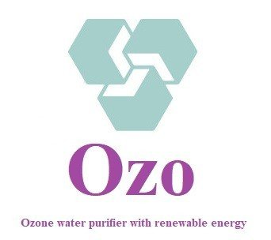
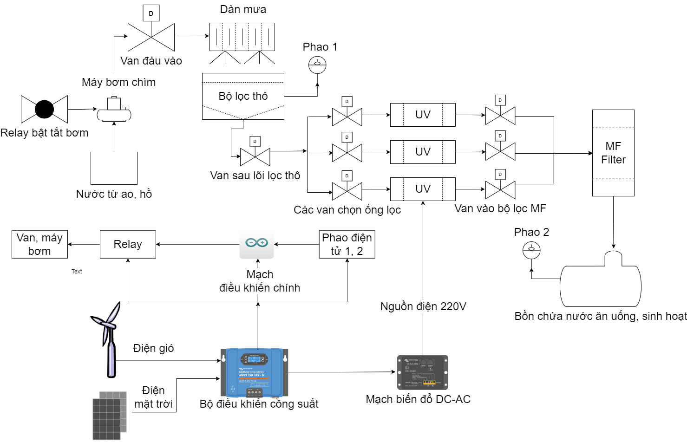
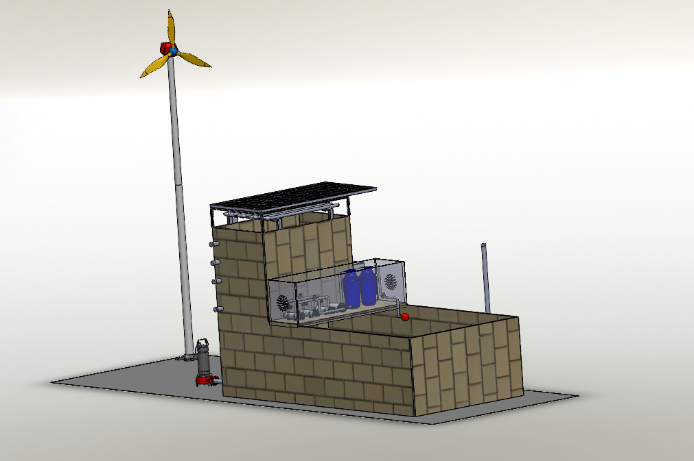
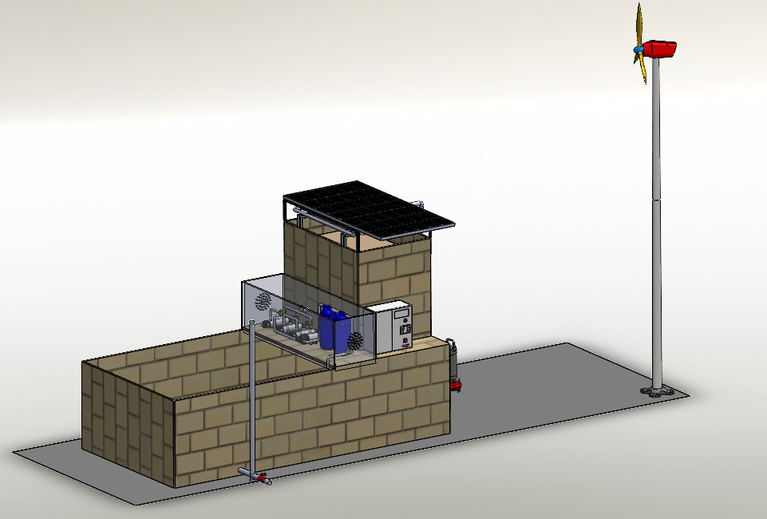

About OZO Project
Về dự án OZO - Máy lọc nước bằng năng lượng tái tạo tại nông thôn
What is OZO Project?
Dự án OZO là gì？
Renewable energy-powered water purifiers are a comprehensive solution for households in rural areas where access to clean water is limited and the quality of water sources is unsafe. These machines utilize solar and wind energy
to power UV disinfection equipment, pumps, and maintain the filtration system's operation.
Máy lọc nước bằng năng lượng tái tạo là giải pháp lọc tổng cho các hộ gia đình tại nông thôn, nơi chưa tiếp cận nước sạch và chất lượng nguồn nước không an toàn. Máy sử dụng nguồn năng lượng mặt trời và điện gió để vận
hành thiết bị khử trùng bằng tia UV, bơm và duy trì hoạt động của hệ thống lọc.
The objective of the project is to provide a safe, cost-effective, and suitable water filtration solution to the residents, thereby raising awareness among the community about renewable energy.
Mục đích của dự án là cung cấp giải pháp lọc nước an toàn, tiết kiệm và phù hợp với người dân, thông qua đó nâng cao nhận thức của người dân về năng lượng tái tạo 。
What is the goal of the project?
Mục tiêu của dự án là gì？
The objectives of the project are as follows: Provide sufficient domestic water supply that meets the standard requirements for one household, reducing the cost of using clean water by 50-70%; Develop a solution and share information about the technology
and design of renewable energy-powered water filtration systems with 50-100 students, encouraging them to enhance their research and learning interests and gain knowledge about renewable energy; Promote knowledge about renewable
energy and the use of safe water to 30-50 households, enabling them to access the benefits of renewable energy by 100%.
Mục tiêu của dự án là: Cung cấp đủ nước sinh hoạt cho 01 hộ gia đình với
chất lượng đạt chuẩn các chỉ tiêu nước sinh hoạt, giảm chi phí sử dụng nước sạch 50-70% Tạo giải pháp, chia sẻ thông tin về công nghệ, kỹ thuật thiết kế máy lọc nước bằng năng lượng tái tạo tới 50-100 sinh viên, học sinh, 100%
được nâng cao cảm hứng nghiên cứu và học tập, hiểu biết kiến thức về năng lượng tái tạo Phổ biến kiến thức về năng lượng tái tạo và sử dụng nước an toàn cho 30-50 hộ gia đình, các hộ tiếp cận lợi ích của năng lượng tái tạo
100% 。
Who are the problems aimed at?
Đối tượng hưởng lợi trực tiếp từ dự án？
Direct beneficiaries: Households, Students, Teachers; Indirect beneficiaries: Local authorities (in the context of the new rural development movement), Educational institutions (in terms of fostering a learning spirit and research
outputs)
Đối tượng hưởng lợi trực tiếp: Hộ gia đình Học sinh, sinh viên Đối tượng hưởng lợi gián tiếp: Chính quyền địa phương (trong phong trào nông thôn mới) Giáo viên, nhà trường (trong tinh thần học tập và sản phẩm nghiên cứu)
。
Diagram of water purification cycle by wind and solar energy
Sơ đồ chu trình lọc nước bằng năng lượng gió và mặt trời
Water purifier model design
Thiết kế mô hình máy lọc nước
 What is the sustainability of the project?
Đâu là tính bền vững của dự án？
The problems range in difficulty and for many the experience is inductive chain learning. That is, by solving one problem it will expose you to a new concept that allows you to undertake a previously inaccessible problem. So the
determined participant will slowly but surely work his/her way through every problem.
Thiết bị lọc nước sử dụng công nghệ Ozone với các bộ phận lọc thân thiện, giá rẻ và hiệu qủa, sử dụng năng lượng mặt trời bền vững, kiểm
soát chất lượng của nước, được tổng hợp và báo cáo thành một chuyên đề trao đổi trong trường học, phổ biến kiến thức về năng lượng tái tạo. Sản phẩm có thể được phát triển hoàn thiện thành một sản phẩm giá cả phải chăng, chia
sẻ công nghệ cho bà con dễ dàng tiếp cận. Mở rộng số hộ gia đình sử dụng bởi hiệu quả và phí vận hành. Sau khi thử nghiệm thành công, dự án có thể phát triển thành nhóm khởi nghiệp.。